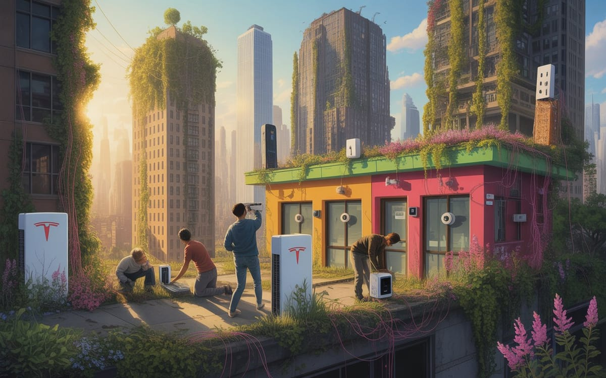

:: Now begins a story...
May I present to you, a finely curated section of a fine collection of the wonderful web we weave with a weekly roundup of bits and pieces from the far corners of the super information highway that I like to call — Token Wisdom ✨


"In an age where data flows like water and intelligence can be bought for fifty dollars, perhaps wisdom lies not in accumulating knowledge, but in knowing which questions to ask."

Editor's Notes 📆
Week 30 of 52 // July 20th 🧿 26th, 2025
Welcome to the 118th edition! This week we explore the critical intersection of AI and human intelligence, investigate concerning developments in data privacy and security, and venture into groundbreaking scientific discoveries. From TSMC's drone rollout in Arizona to scientists using brain cells to power computers, we're witnessing both the promise and potential pitfalls of rapid technological advancement.
The convergence of AI capabilities, privacy concerns, and revolutionary scientific discoveries continues to reshape our understanding of technology's role in society and its impact on human potential.

🔮 Pearls of Wisdom, The Latest Edition...
Get smart, fast. If you're pressed for time and want to keep up to date!
Enjoy The Newest Latest, A Closer Look & Time Well Spent!

🎉 Newest / Latest
100% Authentic Humanly Chosen

Critical Thinking, Data Privacy, and Scientific Breakthroughs
This week's collection examines the growing need for critical thinking in AI adoption, alarming developments in data privacy, and groundbreaking scientific discoveries. From corporate surveillance to quantum physics, we explore how technology is both empowering and challenging our society's fundamental structures.
- Only Critical Thinking Ensures AI Makes Us Smarter, Not Dumber
Organizations using AI without critical thinking face serious risks. Forbes explores practical frameworks for ensuring AI enhances rather than diminishes our cognitive capabilities. Read more at Forbes - America's Water-to-Energy Race Sparks Cross-Border Tensions
The Columbia River becomes a flashpoint as America's energy ambitions clash with Canadian interests, testing decades-old treaties and international cooperation. Learn more at Ecoticias - Revolutionary Wind Turbine Could Replace Solar Panels
The LIAM F1 UWT wind turbine promises 1500 kWh of free energy for homes, potentially disrupting the residential solar market. Discover at Ecoticias - Scientists Discover Door to Hidden Reality
Physicists have found a new way to access a previously hidden slice of reality where elusive particles might be hiding, expanding our understanding of the universe. Explore at New Scientist - TSMC Plans Drone Rollout in Arizona
The semiconductor giant prepares to deploy drones at its Arizona facility, marking a significant step in automated manufacturing. Read at TrendForce - Optimists Share Brain Patterns, Pessimists Unique
A fascinating brain scan study reveals that optimists share similar neural patterns while pessimists show individualized brain activity. Discover at Scientific American - Startup Sells Stolen Data for $50
A concerning exposé reveals how easily personal information can be purchased on the open market, highlighting critical privacy vulnerabilities. Learn more at PCWorld - Ukrainian Startup Builds GPS-Free Systems for Modern Drones
Sine Engineering develops resilient drone systems that can operate without GPS in contested airspace, showcasing technological adaptation in warfare. Read at Interesting Engineering - 'Living' Computers Powered by Brain Cells
Scientists explore the potential of using living brain cells to create more efficient and revolutionary computing systems. Explore at National Geographic - SS7 Attack Exposes Phone Location Tracking
A surveillance vendor exploits a new vulnerability in the SS7 protocol, raising concerns about mobile privacy and security. Learn more at TechCrunch
*CAUTION: Side effects might include your phone spontaneously revealing your location to drones manufacturing semiconductors, your solar panels being replaced by a sentient wind turbine with an uncanny ability to predict your mood, or finding yourself inadvertently funding both Ukrainian military innovation and Canadian hydroelectric projects through surreal AI-generated content.
This uncanny prediction is endorsed by the Association for Neuromorphic Computing in Contested Airspace, approved by a consortium of optimistic physicists currently exploring hidden realities through brain-powered quantum computers, and verified by a mysterious energy surge currently forming at the edge of your nearest SS7 protocol.
👁️ A Closer Look
Unearthing gems in the digital landscape.

Because in the ever-evolving tech world, there's always more to learn and laugh about.
Scrapyard Futures in the Digital Ruins
In the shadow of failed tech giants, a new kind of treasure hunter emerges. Armed with engineering degrees and bolt cutters, urban communities are building resilient futures from corporate wreckage. What some see as technological ruins, others recognize as the building blocks of liberation. Welcome to the age of digital resurrection. Here, among the discarded dreams of Silicon Valley, tomorrow's revolutionaries are rewriting the code of civilization itself.
 🌶️ iamkhayyam
🌶️ iamkhayyam
A Closer Look: Explorations in Technology
Weekly essay in the areas of blockchain, artificial intelligence, extended reality, quantum computing, and all the bits and pieces.

A Closer Look: Explorations in Technology
Weekly essay in the areas of blockchain, artificial intelligence, extended reality, quantum computing, and all the bits and pieces.


📺 Time Well Spent
Top Ten of the Time I Spend

From Smart Cities to Surveillance States: Visual Stories of Our Digital Future
This week's video collection explores the complex relationship between technological advancement and societal control, from Singapore's AI-powered surveillance to Amsterdam's circular city initiatives. We examine how different societies balance innovation with freedom, and efficiency with privacy.
- Singapore: Surveillance State | The Price of 'Perfect' Safety
A deep dive into one of the world's most regulated societies, where AI and surveillance create both security and concern. Watch on YouTube - How Amsterdam Will Transform into a Circular City by 2050
Exploring an alternative vision of urban development focused on sustainability and citizen empowerment. View on YouTube - Elon Musk's Latest Tweet Changes Everything!
Analysis of Grok AI's implications for autonomous systems and artificial intelligence development. Watch on YouTube - How This Startup Built A Hospital in India To Test Its AI Software
Innovative approaches to medical AI development and clinical trial optimization. Explore on YouTube - Volvo Armoured Cars: Everything You Need to Know
Technical insights into modern vehicle security and protection systems. Learn more on YouTube - Why Did Turing Study Fish?
Exploring how simple rules and interactions can lead to complex intelligence. Watch on YouTube - Undercover Journalist Unpacks Essential Tools
Practical insights into investigation and documentation in high-risk environments. Discover on YouTube - Even NASA Engineers Couldn't Think of This
Innovative construction techniques pushing the boundaries of conventional wisdom. View on YouTube - Elissa Slotkin's Maiden Speech
Analysis of political discourse and public policy implications. Watch on YouTube - How Intelligence Becomes Its Own Enemy
Examining the paradoxical relationship between technological advancement and human wisdom. Explore on YouTube
*This remarkable skill set has been certified by the League of Circular City Architects Currently Hiding in Plain Sight, verified by an ensemble of AI ethicists riding in armored vehicles, and approved by the Society for Fish-Inspired Political Discourse and Technological Paranoia.
CAUTION: Please exercise discretion when attempting to implement circular city designs, deploy medical AI in armored vehicles, or study fish for political insights without proper authentication by the International Association of Responsible Urban-Aquatic-Technological Interface Navigators. The digital pioneers in Silicon Valley neither confirm nor deny these findings, being preoccupied with teaching their fish-inspired AI to deliver speeches while evading surveillance and contemplating the meaning of circular intelligence.

✨Token Wisdom
Knowledge Transmuted
In this 118th edition of Token Wisdom, we've explored the critical need for thoughtful AI integration and the concerning developments in data privacy, as highlighted in "The Newest Latest" on Side A.
Our journey through "Time Well Spent" on Side B reveals the complex interplay between technological advancement and societal control, from Singapore's AI-powered surveillance to Amsterdam's vision of a circular city, demonstrating how different societies navigate the balance between innovation and freedom.

Latest Technologies & Innovations:
- Critical Thinking Frameworks: AI-aware decision-making methodologies
- Wind Turbine Technology: LIAM F1 UWT residential energy systems
- Quantum Detection Systems: Tools for exploring hidden particle realms
- Drone Manufacturing: Automated semiconductor facility operations
- Brain-Computer Interfaces: Neural tissue computing systems
- GPS-Independent Navigation: Resilient drone guidance systems
- SS7 Protocol Security: Mobile network vulnerability detection
- Neural Pattern Analysis: Brain scanning and activity mapping
- Data Privacy Tools: Personal information protection systems
- Water-Energy Infrastructure: Cross-border resource management
Most Important Topics:
- AI Integration: Critical thinking in automated decision-making
- Data Privacy: Personal information security and surveillance
- Renewable Energy: Residential power generation innovation
- Quantum Physics: Hidden reality exploration
- Manufacturing Automation: Drone deployment in industry
- Neuroscience: Brain pattern analysis and computing
- Cybersecurity: Mobile network vulnerabilities
- Military Technology: GPS-independent navigation
- International Relations: Resource management conflicts
- Urban Development: Smart city surveillance systems
Acronyms:
- TSMC - Taiwan Semiconductor Manufacturing Company
- UWT - Urban Wind Turbine
- GPS - Global Positioning System
- SS7 - Signaling System 7
- AI - Artificial Intelligence
- kWh - Kilowatt Hour
Technical Terms:
- Critical Thinking Framework: Structured approach to analysis and decision-making
- Brain Pattern Activity: Neural response patterns measured through scanning
- Quantum Detection: Methods for observing subatomic particles
- SS7 Protocol: Mobile network signaling standard
- Drone Navigation: Autonomous flight control systems
- Neural Computing: Use of brain cells for information processing
- Cross-Border Resource Management: International sharing of natural resources
- Urban Surveillance Systems: City-wide monitoring networks
- Data Privacy Protection: Methods for securing personal information
- Renewable Energy Systems: Sustainable power generation technologies
Just because Jon Snow knows nothing, doesn’t mean you have to.
Embrace the pursuit of knowledge to shape a better tomorrow. Sign up for more Token Wisdom and carry the torch of foresight into the fathomless domains of innovation and beyond.
"In an age where technology promises both enlightenment and entropy, true wisdom lies not in the blind adoption of new tools, but in the thoughtful cultivation of human judgment. For it is in the space between automation and contemplation that we find our most valuable insights."
— Token Wisdom ✨
Until next time: stay smart, and kind, and definitely stay weird!
Become a Token Wisdom subscriber
Illuminate your inbox with the light of knowledge. ✨

Thank you for cruising by the Cult of Innovation
We’re making some Stone Soup here. If you enjoyed this amuse-bouche of news compilations in bite-sized morsels, please share it with your friends and help feed a community. Mmmm. #nomnom.